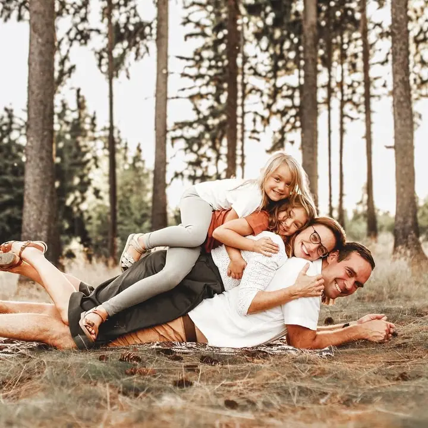
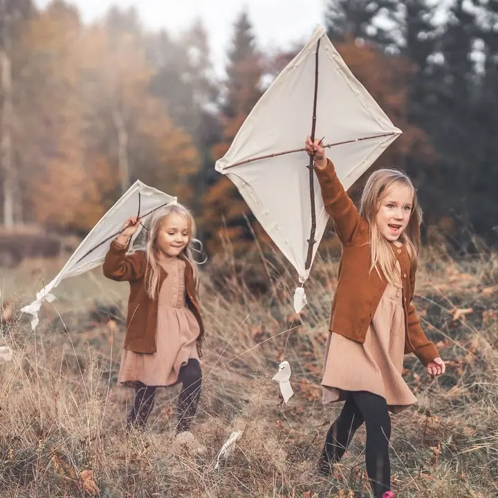
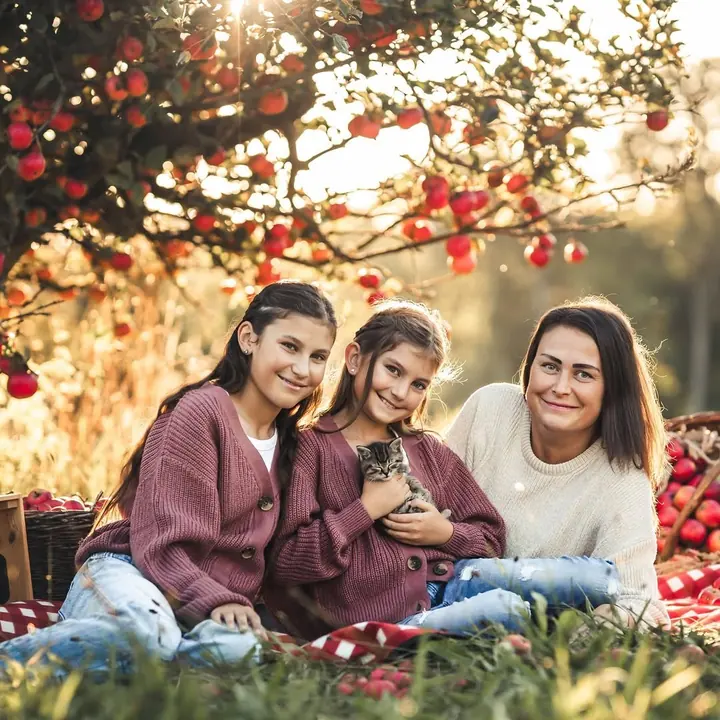

Děti a rodiny
Celá vaše rodina, nebo třeba babiččina vnoučátka. Fotíme venku v lese, v sadu, na louce nebo v zasněžených Jizerkách, podle ročního období.

Jmenuji se Pája Soukupová a fotím rodiny, děti a miminka v Jablonci nad Nisou a pod Jizerkami. Nejradši venku v lese, v sadu nebo na louce, v zimě vás ráda přivítám v te…
Rezervovat termínAhoj, jsem Pája. Nejčastěji mě potkáte venku, v lese, na horách nebo někde na výletě, a přesně tam se cítím nejlíp i s foťákem v ruce. Za foťákem stojím už víc než osm let a fotím hlavně v Jablonci, Liberci a v Jizerkách.


Do přírody se mnou často vyráží můj syn Máťa, parťák na výlety a můj největší životní dar. Díky němu moc dobře vím, jak divoký, neřízený a přitom nádherný umí rodinný život být. Proto nejradši fotím obyčejné, ale důležité chvíle přesně takové, jaké opravdu jsou.
Při focení ode mě nečekejte složité pózování. Projdeme se, budeme si povídat a děti necháme běhat a objevovat. Focení vedu v pohodě a svižně, aby ani ti nejmenší, ani tatínkové nestihli ztratit trpělivost. A pokud si chráníte soukromí, ráda pro vás nafotím i fotografie bez viditelných obličejů.
Co fotím
Celá vaše rodina, nebo třeba babiččina vnoučátka. Fotíme venku v lese, v sadu, na louce nebo v zasněžených Jizerkách, podle ročního období.
Rodinné focení v teplém skleníkovém ateliéru v Jablonci nad Nisou, laděném do bílé, přírodního dřeva a červených vánočních detailů. 30 minut focení a 10 fotografií od 2 590 Kč.
Nejněžnější okamžiky vašich prvních společných dní v porodnici (Fresh 48), u vás doma nebo u mě v ateliéru. Těhotenské bříško ráda vyfotím venku i v ateliéru.
Focení v mateřských školkách a jeslích, ve školách od prvňáčků po maturanty. Třídy, skupinky, jednotlivci i tabla.
Postup
Během roku připravuji sezónní focení v lese, v sadu, v zimní krajině i ve skleníkovém ateliéru. Vyberte si termín a rezervujte si ho přes web.
Projdeme se, povídáme si a děti si hrají. Focení vedu přirozeně a svižně, takže si ho užijete celá rodina.
Náhledy vám pošlu ještě v den focení nebo den následující. Z online galerie si sami vyberete fotky k úpravě.
Upravené fotky dostanete nejpozději do 14 dnů od odeslání vašeho výběru. Z galerie si můžete objednat i tisky a fotoobrazy.
Otázky
Nejlépe vyniknou světlé a přírodní odstíny, bílá, smetanová, béžová nebo světle hnědá. Doporučuji jednodušší a pohodlné oblečení, u Vánoc se krásně hodí i světlá pyžámka.
Určitě. Vánoční focení v ateliéru je vhodné pro miminka od 3 měsíců. Úplně čerstvá miminka ráda vyfotím v porodnici, u vás doma nebo u mě v ateliéru.
Ano, ráda pro vás vytvořím takzvané faceless fotografie bez viditelných obličejů, které můžete v klidu sdílet i na sociálních sítích.
Rezervace je nevratná, ale termín si můžete změnit za jiný aktuálně dostupný. Zrušení je možné nejpozději 2 dny předem ze závažných zdravotních důvodů.